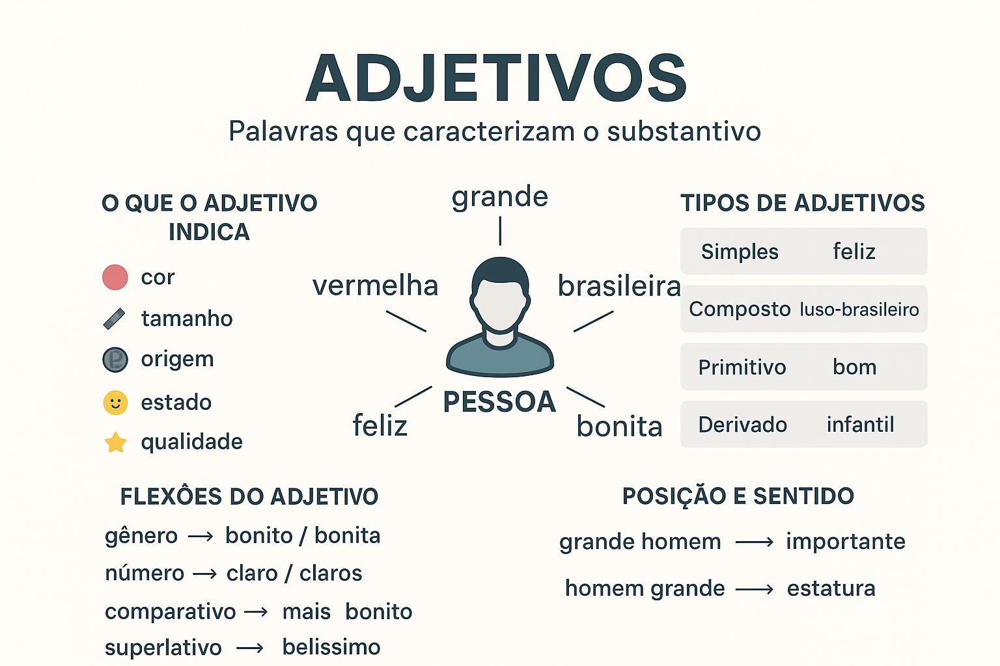

Adjetivos na Língua Portuguesa: tipos, classificações, flexões e exemplos explicados de forma simples
Os adjetivos são palavras que expressam características, qualidades, estados e propriedades atribuídas a um substantivo. Eles tornam a descrição mais precisa e enriquecem o sentido das frases, permitindo explicar como algo ou alguém é.
O que é um adjetivo
O adjetivo é a palavra que indica uma característica (como cor, tamanho, forma, origem, aparência, estado e qualidades). Ele modifica o substantivo responde perguntas como: como é?, de que tipo?, de qual origem?
- Cor: carro vermelho
- Tamanho: casa grande
- Estado: aluno cansado
- Origem: mulher brasileira
Tipos de adjetivos
Os adjetivos podem ser classificados de diferentes maneiras, de acordo com sua forma, origem ou estrutura.
- Simples: possuem um único radical. feliz, rápido, frio.
- Compostos: possuem mais de um radical. luso-brasileiro, amarelo-claro.
- Primitivos: não derivam de outra palavra. bom, leve, puro.
- Derivados: vêm de outras palavras. infantil, luminoso, europeu.
- Pátrios: indicam origem ou nacionalidade. paulista, africano, pernambucano.
- Uniformes: mesma forma para masculino e feminino. feliz, simples.
- Biformes: têm formas distintas. bonito/bonita.
Locuções adjetivas
As locuções adjetivas são expressões formadas por duas ou mais palavras que exercem função de adjetivo.
- de mãe: amor materno
- de cão: ataque canino
- de governo: política governamental
Flexões do adjetivo
Os adjetivos se flexionam conforme o substantivo ao qual se referem, variando em gênero, número e grau.
- Gênero: menina inteligente / menino inteligente.
- Número: solução complicada / soluções complicadas.
- Grau: indica intensidade da qualidade.
Grau do adjetivo
O grau expressa intensidade da característica, podendo ser comparativo ou superlativo.
- Comparativo de igualdade: tão rápido quanto.
- Comparativo de superioridade: mais rápido que.
- Comparativo de inferioridade: menos rápido que.
- Superlativo absoluto analítico: muito bonito.
- Superlativo absoluto sintético: belíssimo.
- Superlativo relativo: o mais eficiente da equipe.
Posição dos adjetivos e mudança de sentido
A posição do adjetivo (antes ou depois do substantivo) pode alterar o significado da frase.
- pobre homem → infeliz.
- homem pobre → sem dinheiro.
- grande homem → importante.
- homem grande → de grande estatura.
Adjetivos x advérbios
Embora pareçam semelhantes, os adjetivos caracterizam substantivos, enquanto os advérbios caracterizam verbos, adjetivos ou outros advérbios.
- garota feliz (adjetivo)
- ela sorriu felizmente (advérbio)
Frases com adjetivos
- A casa antiga foi restaurada.
- O aluno dedicado conquistou a bolsa.
- Uma noite estrelada iluminou o campo.
- As águas cristalinas atraem turistas.
Erros comuns
- Concordância incorreta: *as problema complicada.
- Uso excessivo de adjetivos que tornam o texto prolixo.
- Confusão com advérbios.
Resumo
Os adjetivos enriquecem a descrição de pessoas, objetos, sentimentos e situações. Eles variam em gênero, número e grau, podem alterar o sentido dependendo da posição e desempenham papel essencial na clareza e expressividade do texto.
Explore Outros Conteúdos
Continue seus estudos acessando outras seções do site Mestre Kira:
Explore Outros Conteúdos
Continue seus estudos acessando outras seções do site Mestre Kira: